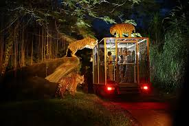

Why visit Night Safari
- Spread over 35 acres of tropical forest
- Houses over 2,500 animals across 130 species
- Won the Best Attraction Award 12 times

What to expect
Prepare yourself for a unique experience at the World’s first Nocturnal Wildlife Park. Night Safari allows you to explore the world of nocturnal animals from different areas of the planet.
There are two-night shows as well; the Thumbuakar Show with pyrotechnics and Creatures of The Night Show that are sure to thrill and excite you.
The key highlight of the Night Safari is the tram ride. This immersive guided tram experience takes you around the park for 40 minutes and the narration during the ride provides fascinating facts and details about these animals.


Getting to Night Safari
- 80 Mandai Lake Road Singapore 729826
- Public transport, shuttle bus or drive
- 7:30 pm - 12:00 am (Last entry at 11.15pm)